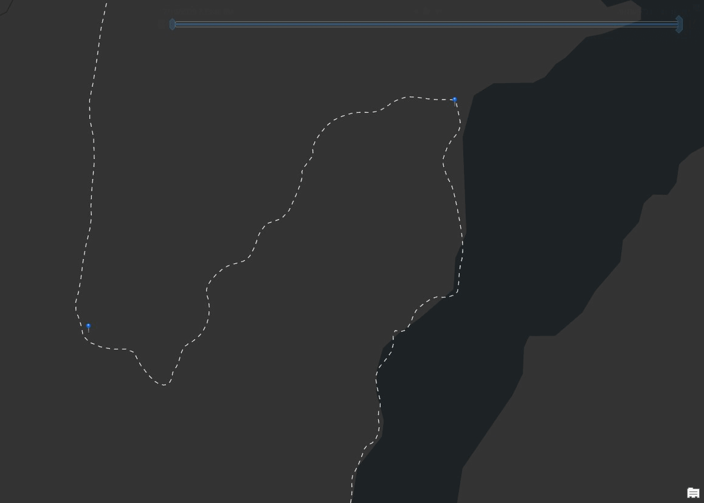

How we created
our products
Our team worked diligently over the past several weeks to provide high-quality mapping and web materials to the Friends of the Dumoine River to help them be ready for the public opening of the Dumoine Tote Road Trail. All products in use by the organization after completion of the project were required to use cost-effective and open-source solutions, be easy to maintain, and able to be updated without further access to our team.
Bald Eagle Cliff from the Dumoine River
The PDF Trail Map
An 8.5x11” georeferenced double sided PDF trail map was created for the client. It was important to the client the map was georeferenced and to be imported into varies hiking apps that the hiking community use. It was also important that the map was a standard page size for trail users to print the map at home. The initial idea to create a double-sided Map PDF was from the amount of passion and information that surrounds the Dumoine Tote Road Trail. The Friends of the Dumoine River’s feature data that was important to display was acquired through digitizing images, old maps, and client meetings. Certain areas required insets as they had significant features to display with more information to be said about the area. Kilometers were added to main features along the trail and on the back PDF as the nearest Campsite to Kilometer sign for one’s knowledge, and for search and rescue requests. Symbology was later implemented and was applied according to cartographic principles by finding icons that group well together, applying colors that harmonize together and ensuring all important features, insets and information is well balanced. An additional QR code was added to the back of the PDF map linking to the Dumoine Tote Road Trails Website.
Multi-Page Website
The website was created for the client as a method to depart from their current social media presence, which is limited to
Facebook and isn't reaching a large audience. The website layout includes sections for English or French language (with the French page currently under construction until
translation is complete), trail information and background, partners, and the Web Map. Each page is equipped with a Nav Bar, a Footer with a sitemap and contact us form. The
current color scheme was chosen by extracting colours out of the photos sent in by the client. The website includes download buttons for the PDF Map and the trail data in three
different formats (GPX, KML, SHP). The website is also equipped with a variety of information about safety while on the trail, a weather widget to check before heading to the
trail, and even a history page with a timeline overviewing the historic events surrounding the Dumoine River Tote Road.
The web map
 The interactive web map of the Dumoine Tote Road Trail was created using Mapbox Studio and their open graphics and JavaScript library (Mapbox GL JS).
All the cartographic and design elements of the map were created in a custom Mapbox Style to highlight the natural terrain and emphasize the important features
present along the trail.
The interactive web map of the Dumoine Tote Road Trail was created using Mapbox Studio and their open graphics and JavaScript library (Mapbox GL JS).
All the cartographic and design elements of the map were created in a custom Mapbox Style to highlight the natural terrain and emphasize the important features
present along the trail. The interactivity of the map is a result of JavaScript programming that pulls from the data found within the map style: examples of interactive elements
include hover and on-click popups of information, pan and zoom capabilities. The map also allows for users to toggle layers on or off using a Mapbox GL JS open-source plugin. Much of the data layers found
on the web map were initially created in ArcGIS Pro for the printed PDF map. It was important that both maps tell the same story, with this option providing a dynamic way
to explore all the features found on the trail.
The interactivity of the map is a result of JavaScript programming that pulls from the data found within the map style: examples of interactive elements
include hover and on-click popups of information, pan and zoom capabilities. The map also allows for users to toggle layers on or off using a Mapbox GL JS open-source plugin. Much of the data layers found
on the web map were initially created in ArcGIS Pro for the printed PDF map. It was important that both maps tell the same story, with this option providing a dynamic way
to explore all the features found on the trail.
Some other products we created
The File Geodatabase
The database was created for the client as an organized place to store all the spatial data relating to their study area. With the study area bordering Ontario and Quebec base data for the File Geodatabase was taken from the federal Canvec data to ensure there where no discrepancies with the data aligning between the provinces. The database is equipped with topological rules to adjust features taken with a phone GPS that had inaccuracies. The topological rules adjusted Dumoine Tote Road Trail, the campsites, and the KM markers to avoid intersecting or overlapping with the Dumoine River. Sets of domains for certain feature classes are also contained within the database, these include TrailFeatures and PlaceTypes. Lastly, the Campsite features were given a subtype based on easily distinguishable campsites and sites that could potentially be used as a campsite, these are split into Primary Campsite and Secondary Campsite.
The Survey Forms
Using KoBo Toolbox, a set of survey forms were created for the client including a form for Trail Hazards and Maintenance issues and Point of Interest Data Collection, the survey forms are being used internally to collect data from volunteers. The Point of Interest form is set up to record location, the nearest KM marker to the feature, images if wanted, and comments if wanted. The Trail hazard form is also set up to take information about the type of hazard being recorded and list the level of severity. Below are links to our final draft before porting the forms over to our client's account.
The Methodology Doucment
The Methodology document was created to ensure the clients ability to update and continue the products delivered in 2022 shall they need to. The document was split into each of the deliverables with each section complete with steps, screen captures, code, images, and links where needed. The document acts as a step-by-step guide if the client ever needs to update or recreate any of the products, some sections are heavier than others depending what the client asked for specific clarification on, such as the Web Map and programming heavy information on the website such as the contact us form, and the weather widget. This document was included with the clients archive package.